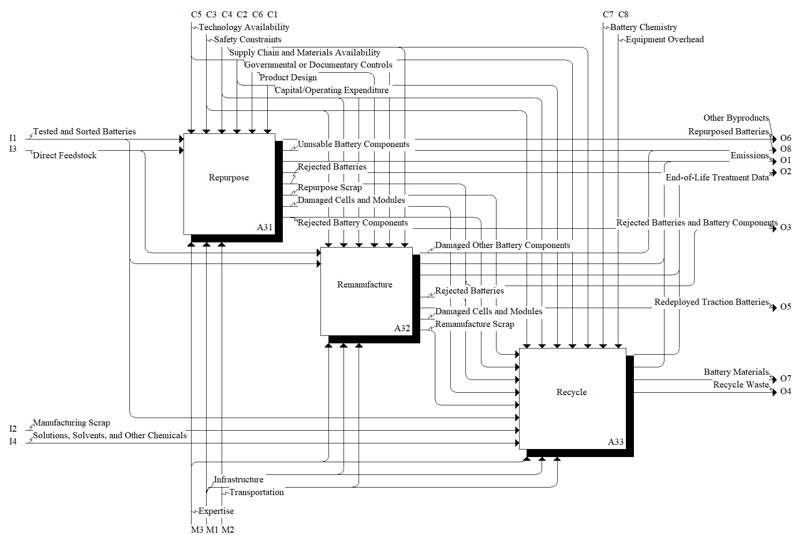

Model: Recover Materials/Devices

Description
Notes:Parent activity of repurpose, remanufacture, and recycle.
Definitions:
See daughter activities.
Standards:
UL 3601, Measuring and Reporting Circularity of Li-ion and Other Secondary Batteries
UL 1974, Evaluation for Repurposing or Remanufacturing Batteries
References:
DeRousseau M, Gully B, Taylor C, Apelian D, Wang Y (2017) Repurposing used electric car batteries: a review of options. JOM, 69(9), 1575-1582. https://doi.org/10.1007/s11837-017-2368-9
Foster M, Isely P, Standridge CR, Hasan MM (2014) Feasibility assessment of remanufacturing, repurposing, and recycling of end of vehicle application lithium-ion batteries. Journal of Industrial Engineering and Management, 7(3), 698-715. https://doi.org/10.3926/jiem.939
Garole DJ, Hossain R, Garole VJ, Sahajwalla V, Nerkar J, Dubal DP (2020) Recycle, recover and repurpose strategy of spent Li-ion batteries and catalysts: Current status and future opportunities. Chemistry-Sustainability-Energy-Materials, 13(12), 3079-3100. https://doi.org/10.1002/cssc.201903213
Standridge CR, & Hasan MM (2015) Post-vehicle-application lithium-ion battery remanufacturing, repurposing and recycling capacity: Modeling and analysis. Journal of Industrial Engineering and Management, 8(3), 823-839. https://doi.org/10.3926/jiem.1418
Parent Activity: Recover Materials/Devices
Activities
Disclaimer: Certain commercial equipment, instruments, or materials are identified in this documentation to foster understanding. Such identification does not imply recommendation or endorsement by the National Institute of Standards and Technology, nor does it imply that the materials or equipment identified are necessarily the best available for the purpose.